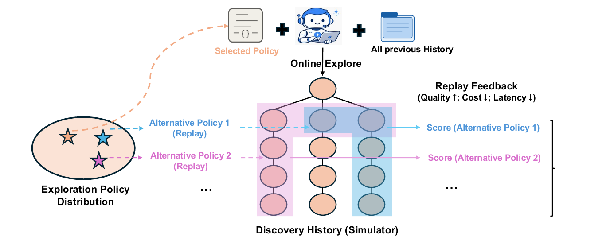

The next experiment is also a decision.
Executing an idea perfectly does not guarantee that it is worth testing. In AI research, deciding where to persist, explore alternatives, or stop can matter as much as writing a good program.
Imagine a map of attempts
Each experiment leaves a path and a result. Later researchers can traverse this map, compare decisions, and build on what has already been measured. The analogy helps explain the method, but the actual map consists of structured execution records.
The strategy is what improves
An exploration policy is the rule that determines how to allocate attempts. In Dream-RSI, this policy is editable code. The coding agent and evaluator remain fixed during the controlled comparison.
One loop builds the map for the next.
The process alternates real work with evaluation over records. The two phases serve different purposes.
Explore and record
The current policy guides the agent. Programs are created and evaluated; attempts, relationships, and results form a tree. This phase uses real executions.
Turn history into replay
The tree becomes a queryable environment. A policy can visit branches in a different order and choose when to stop exploring them, using results that already exist.
Compare candidate policies
An agent develops variations of the exploration code. Replay provides feedback for selecting a policy that balances quality, work, and parallelism.
Return to research and expand the history
The selected policy guides the next round. New executions add trees to the simulator set. Improving the strategy and expanding the history complete the cycle.
See the mechanism in the authors’ figures.
Images downloaded from the original site and preserved, with explanatory text in Portuguese. Click a figure to open it at full size.


What was measured—and against what.
The paper evaluates eight tasks across three domains. There is no single metric: runtime, agent calls, and solution quality answer different questions.
| Policy / model | Discovery calls | Final average runtime (ms) |
|---|---|---|
| Fixed · Gemini-3.1-Pro | 550 | 3,587.1 |
| Dream-RSI · Gemini-3.1-Pro | 317 | 2,931.0 |
| Fixed · Gemini-3.7-Flash | 3,200 | 2,516.7 |
| Dream-RSI · Gemini-3.7-Flash | 1,879 | 2,350.6 |
The average runtime combines six test datasets. “Compute” in this table means the cumulative number of calls, not dollars, energy, or the total time spent on all research. Model names are kept as published by the authors. Paper, section 4.1 ↗
Compare on the same basis.
Visualization of the published numbers. It does not run AI or estimate a financial bill.
Final average runtime: from 3,587.1 to 2,931.0 ms.
The 162× figure needs context
It compares 51,200 SimpleTES calls with 317 Dream-RSI calls on Lasso. The baselines use different models; this is not a controlled comparison that changes only the policy. Do not treat this factor as a general savings promise.
There are also results without a win
In mathematics, Dream-RSI improves the sum-difference result and ties on circle packing among the listed methods. On autocorrelation, SimpleTES retains the best value; Dream-RSI uses a smaller generation budget.


Understanding also means knowing where the idea ends.
Replay cannot see the future.
It answers questions about the space already explored. A branch that was never executed does not gain a reliable result just because a simulation exists. That is why new real rounds remain necessary.
Zero new executions does not mean zero total cost.
The history had to be produced. Generating and reviewing policies, storing records, and running replay also require resources. The reported savings in discovery calls do not capture the full cost.
A policy that performs better on history can fail beyond it.
Including the current policy among the candidates makes it possible to choose one that does not lower the score on that replay. This does not guarantee the same result on new tasks. The learning plan separates development and test trees to make this risk visible.
The agent cannot look up the answer before deciding.
Appendix B restricts the policy to the observed prefix: only nodes already revealed can guide the next decision. Choosing branches by looking at hidden results would leak information and invalidate the comparison.
“Less guidance was better” has a specific scope.
The study’s ablation tests one specific way of adding directional trajectory summaries to prompts. This mechanism hurt results under the evaluated conditions. It is not evidence that all instructions, memory, or guidance are harmful.
AI history is an analogy, not this study’s dataset.
Hinton, GPUs, Transformers, AlphaGo, and AlphaFold help discuss dependencies between discoveries. The Dream-RSI presented here uses trees recorded in discovery tasks; it does not simulate all of scientific history or demonstrate rediscovering the future from a historical cutoff of knowledge.
Where AlphaEvolve fits into this story.
AlphaEvolve combines language models and automated evaluation in an evolutionary program search process. Dream-RSI focuses on improving the policy that organizes exploration. Both contribute to automated research, but their mechanisms and results should be presented separately.
DeepMind reports that a heuristic discovered by AlphaEvolve for Borg recovers an average of 0,7% of Google’s global computing resources. The source does not convert this result into “millions of dollars”; that narrator’s estimate will not be presented as fact.
A question to test your understanding.
A policy performed better on every available historical tree. What can we conclude?
Choose an answer to see the explanation.
A project for learning how to evaluate discoveries.
Proposal: a Portuguese-language learning lab that starts with visual reading and progresses to decision experiments. The guide and activity above are available now; the stages below are the expansion plan.
Go to the source. Check the details.
Primary references support the claims. The video is the editorial starting point; the attached image is not used as scientific evidence.
- Original Dream-RSI websiteIntroduction to the method, demo, and source of the five figures on this page.
- Zheng et al. — Dream-RSI: Recursive Self-Improvement through Evolving WorldsarXiv:2609.14858v1 · September 14, 2026. Method, tables, ablations, and prompts.
- Authors’ repositoryCode status, citation instructions, and release plan.
- AlphaEvolve — Google DeepMindSource for the 0.7% result in computing resource management.
- Video: “Google is back...”Source of the summary provided for this project; analysis based on the supplied text and comparison with primary sources.
Figures: Zheng et al. / Dream-RSI, kept without overlaid translation. Credits and source URLs are listed in image register. Rights belong to their respective holders. Commentary and activities are INEMA educational content.